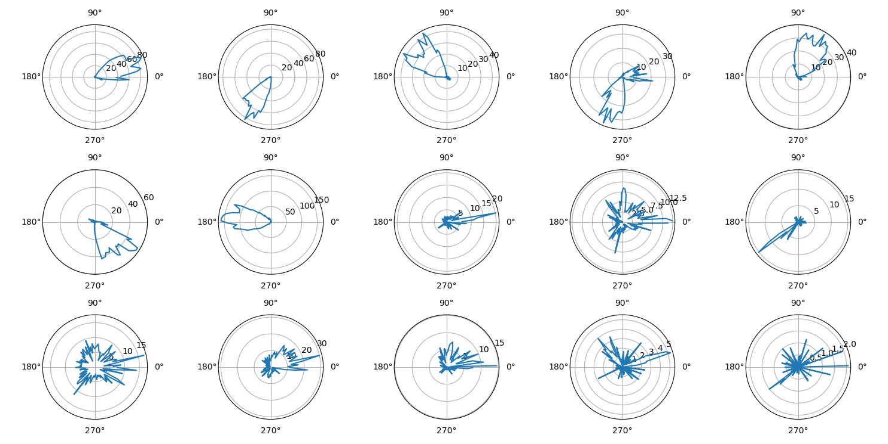

Overview


PYthon Neural Analysis Package.
pynapple is a light-weight python library for neurophysiological data analysis. The goal is to offer a versatile set of tools to study typical data in the field, i.e. time series (spike times, behavioral events, etc.) and time intervals (trials, brain states, etc.). It also provides users with generic functions for neuroscience such as tuning curves and cross-correlograms.
- Free software: MIT License
- Documentation: https://pynapple.org
Note
If you are using pynapple, please cite the following paper
Community
To ask any questions or get support for using pynapple, please consider joining our slack. Please send an email to thepynapple[at]gmail[dot]com to receive an invitation link.
New releases 
pynapple >= 0.7
Pynapple now implements signal processing. For example, to filter a 1250 Hz sampled time series between 10 Hz and 20 Hz:
New functions includes power spectral density and Morlet wavelet decomposition. See the documentation for more details.pynapple >= 0.6
Starting with 0.6, IntervalSet objects are behaving as immutable numpy ndarray. Before 0.6, you could select an interval within an IntervalSet object with:
With pynapple>=0.6, the slicing is similar to numpy and it returns an IntervalSet
pynapple >= 0.4
Starting with 0.4, pynapple rely on the numpy array container approach instead of Pandas for the time series. Pynapple builtin functions will remain the same except for functions inherited from Pandas.
This allows for a better handling of returned objects.
Additionaly, it is now possible to define time series objects with more than 2 dimensions with TsdTensor. You can also look at this notebook for a demonstration of numpy compatibilities.
Getting Started
Installation
The best way to install pynapple is with pip within a new conda environment :
or directly from the source code:
$ conda create --name pynapple pip python=3.8
$ conda activate pynapple
$ # clone the repository
$ git clone https://github.com/pynapple-org/pynapple.git
$ cd pynapple
$ # Install in editable mode with `-e` or, equivalently, `--editable`
$ pip install -e .
Note The package is now using a pyproject.toml file for installation and dependencies management. If you want to run the tests, use pip install -e .[dev]
This procedure will install all the dependencies including
- pandas
- numpy
- scipy
- numba
- pynwb 2.0
- tabulate
- h5py
Basic Usage
After installation, you can now import the package:
You'll find an example of the package below. Click here to download the example dataset. The folder includes a NWB file containing the data.
import matplotlib.pyplot as plt
import numpy as np
import pynapple as nap
# LOADING DATA FROM NWB
data = nap.load_file("A2929-200711.nwb")
spikes = data["units"]
head_direction = data["ry"]
wake_ep = data["position_time_support"]
# COMPUTING TUNING CURVES
tuning_curves = nap.compute_1d_tuning_curves(
spikes, head_direction, 120, minmax=(0, 2 * np.pi)
)
# PLOT
plt.figure()
for i in spikes:
plt.subplot(3, 5, i + 1, projection="polar")
plt.plot(tuning_curves[i])
plt.xticks([0, np.pi / 2, np.pi, 3 * np.pi / 2])
plt.show()

Credits
Special thanks to Francesco P. Battaglia (https://github.com/fpbattaglia) for the development of the original TSToolbox (https://github.com/PeyracheLab/TStoolbox) and neuroseries (https://github.com/NeuroNetMem/neuroseries) packages, the latter constituting the core of pynapple.
This package was developped by Guillaume Viejo (https://github.com/gviejo) and other members of the Peyrache Lab.